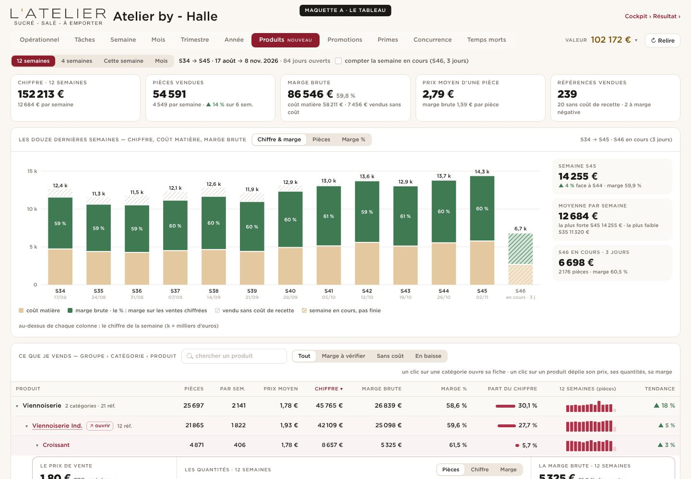
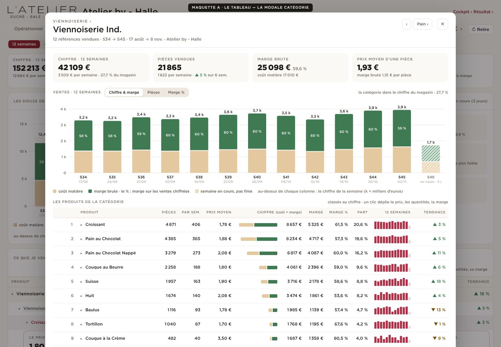
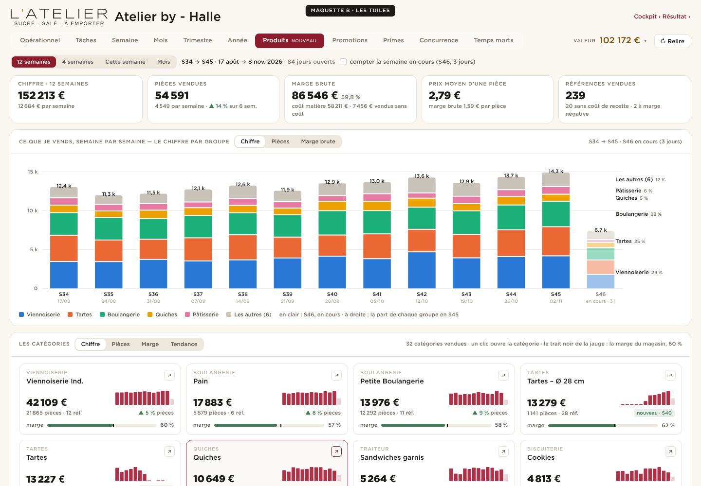
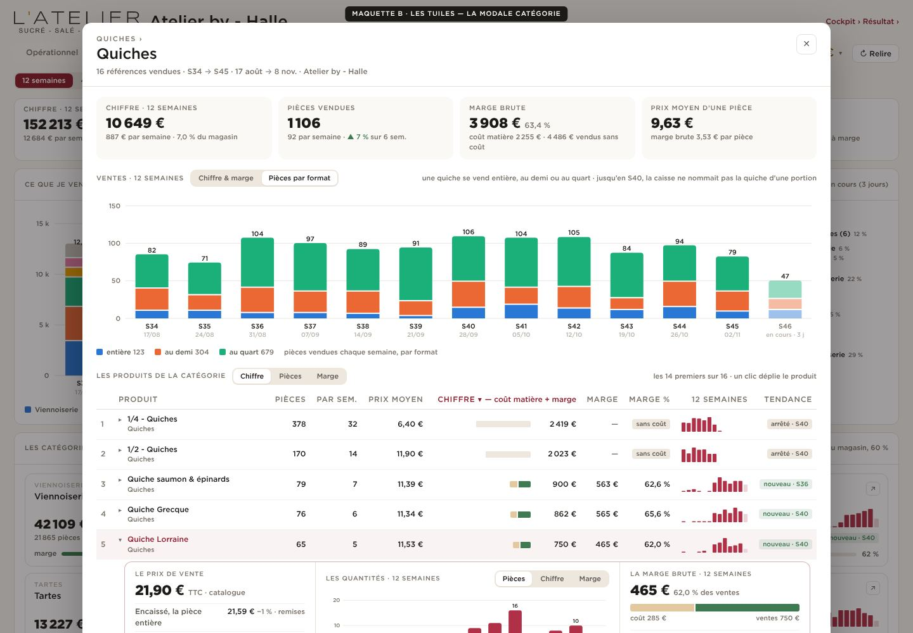
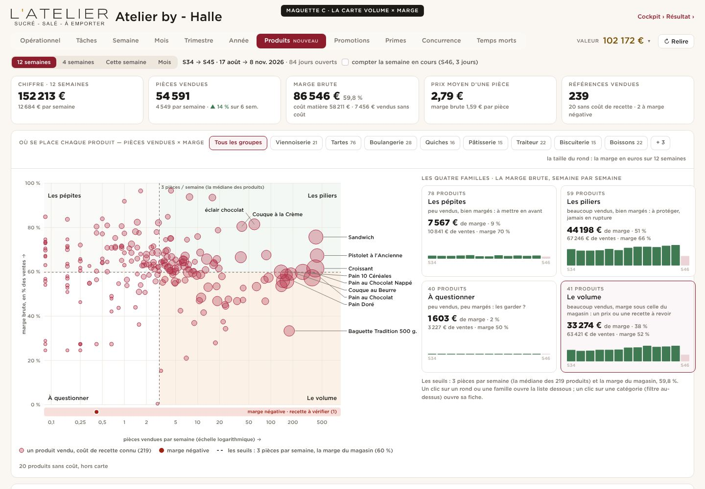
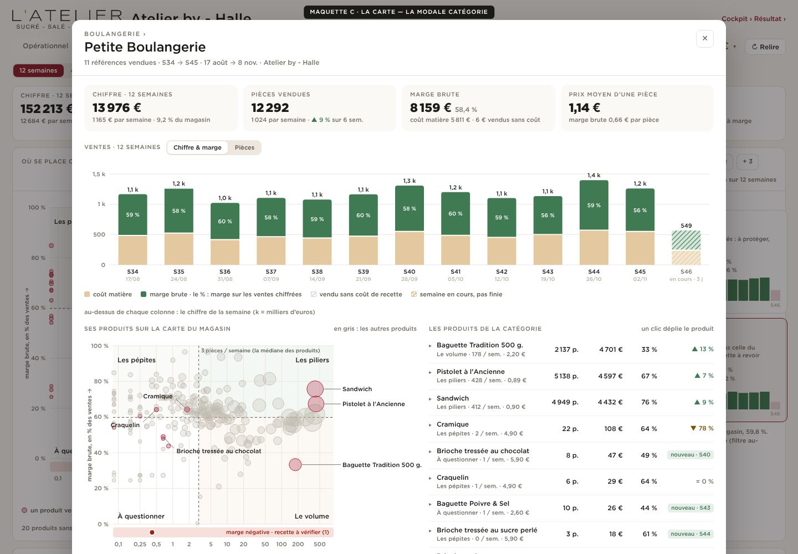
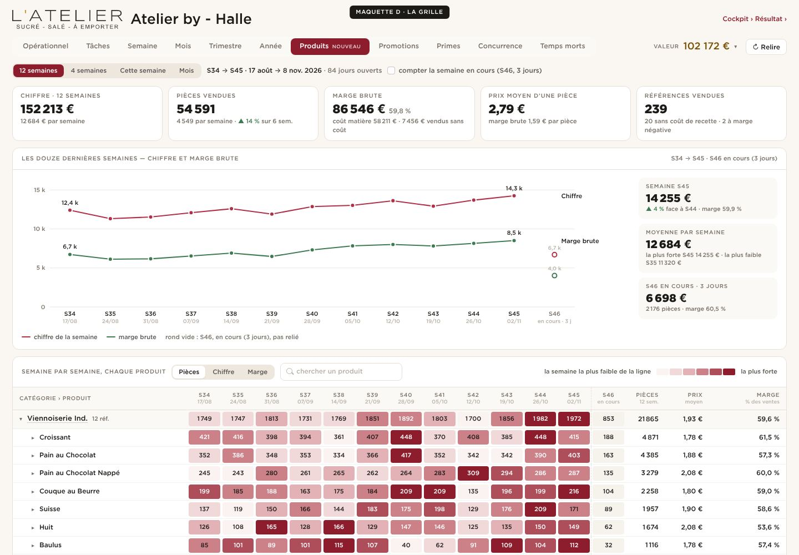
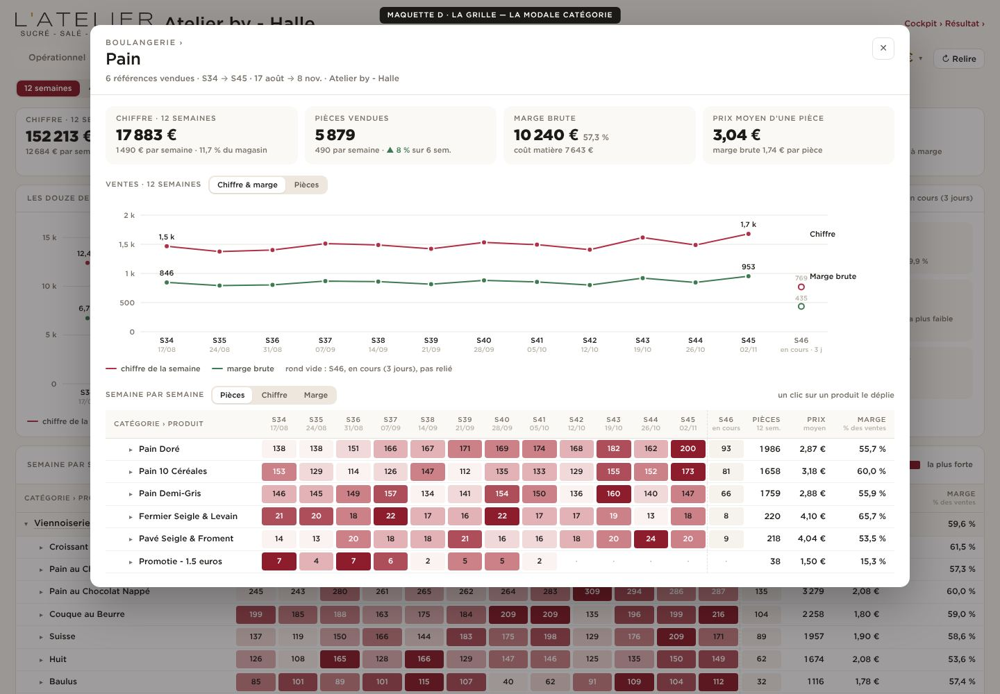

Groupe › catégorie › produit dans une seule liste, colonnes chiffrées. Le graphique : coût matière + marge = chiffre de chaque semaine.


Une tuile par catégorie (chiffre, pièces, jauge de marge, 12 semaines) ; dessous, le palmarès des produits à la marge.


Chaque produit placé selon ses pièces par semaine et sa marge : piliers, volume, pépites, à questionner.


Chaque produit sur 12 colonnes de semaines, la case plus foncée quand la semaine est forte ; courbes chiffre et marge au-dessus.

